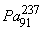

|
В. И. ЕЛИСЕЕВ ВВЕДЕНИЕ В МЕТОДЫ ТЕОРИИ
ФУНКЦИЙ ПРОСТРАНСТВЕННОГО КОМПЛЕКСНОГО ПЕРЕМЕННОГО |
|
6.5. Обобщение результатов альфа распада. Расчет радиоактивных рядов.
Мода характеризуется образованием в исходном материнском ядре двух блоков из ядер первой половины элементов и их изотопов периодической таблицы. Мода задает уровень возбуждения материнского ядра.
Материнское исходное ядро распределяет энергию обменного кванта по ядрам двух блоков, так что эти ядра переходят в возбужденное состояние относительно своих исходных состояний. Исходные состояния каждого ядра имеют свои уровни энергии обменных квантов. Сумма энергии обменных квантов равна энергии обменного кванта материнского ядра. Обменный квант это термин, под которым надо понимать полевую составляющую каждого ядра.
Энергия возбуждения материнского ядра для конкретной моды распада определяется разностью между суммой энергий ядер в составе материнского ядра и их суммой в исходном состоянии. Так что, каждая мода характеризуется своим уровнем возбуждения. Расчет показал, что каждое конкретное ядро имеет интервал энергий возбуждения от своего минимального состояния, при котором происходят внутренние процессы перестройки моды и ядро является устойчивым, до энергий, которые вызывают электронный или позитронный распад ядра или альфа распад. Далее может возбуждение достигнуть уровня, при котором происходят одновременно все распады. Ядра блоки в материнском ядре имеют потенциальную возможность к тому или иному виду распада. Комбинация этих потенциальных возможностей определяет канал распада. Рассчитывались следующие возможные комбинации : Альфа –распад одного из блоков совместно с позитронным или электронным распадом другого блока, позитронный распад одного из блоков совместно с электронным распадом другого блока, позитронный или электронный распад обоих блоков, альфа –распад двух блоков. Всего 7-мь каналов распада. К-захват оценивался как позитронный распад. Распады контролировались энергетическими соотношениями (глава 6.1). Кроме того, учитывались три кулоновских барьера; первые два определялись для альфа частицы и каждого из блоков, третий определялся для всего материнского ядра. Альфа –распад для первых двух кулоновских барьеров рассматривался как внутренний, вызывающий перестройку моды. Этот канал считаем не вызывает
выход альфа частицы из материнского ядра. Это специально принятые жесткие ограничения в расчете. Это жесткое ограничение можно естественно поставить под сомнение, ввиду того что экспериментально установлено изменение кулоновского барьера по поверхности несимметричного эллипсоидальной формы ядра и как следствие возможного альфа распада. Однако ввиду отсутствия конкретных формул для расчеты по распределению кулоновского барьера вдоль поверхности ядра и отсутствия экспериментальных данных оценка альфа распада проводилась по жесткому варианту, преодоления альфа частицей кулоновского барьера материнского ядра. Сформулируем выводы по результатам расчета :- Результаты расчетов согласуются с экспериментальными данными таблицы изотопов 37.1 [20].
Рассмотрим конкретные результаты расчетов.
Ядро платины при энергии возбуждения моды 11,27Мэв реализуется  -распад и возможен
-распад и возможен  -распад.
-распад.
При энергии возбуждения моды 0,4Мэв для ядра платины реализуется только  -распад.
-распад.
При энергии возбуждения 17,911Мэв для этого ядра реализуется как  так и
так и  -распады.
-распады.
При энергии возбуждения 2,79Мэв для ядрареализуется  -распад. Канала
-распад. Канала  -электронного распада закрыты даже при энергии возбуждения в 23,53Мэв.
-электронного распада закрыты даже при энергии возбуждения в 23,53Мэв.
На этом примере видно, что мода существенным образом влияет на уровень возбуждения материнского ядра, а характер радиоактивного распада зависит от комбинаций потенциальных возможностей к возбуждению ядер блоков.
Для ядра  реализуется канал
реализуется канал  -электронного распада,
-электронного распада,  -распад закрыт. При увеличении возбуждения, вызванного перестройкой моды, с энергии 7,201Мэв до 21,314Мэв, возможен
-распад закрыт. При увеличении возбуждения, вызванного перестройкой моды, с энергии 7,201Мэв до 21,314Мэв, возможен  -распад.
-распад.
Для ядра для мод распада, вызывающих возбуждение с уровнями энергии 3,928Мэв, 4,369 Мэв,6,325Мэв, 11,674Мэв распад не происходит. При энергии 12,59Мэв происходит  -распад или К-захват. При энергиях 15,297 Мэв,17,8677Мэв происходит
-распад или К-захват. При энергиях 15,297 Мэв,17,8677Мэв происходит  -распад. Таким образом, минимальная величина возбуждения, при которой происходит
-распад. Таким образом, минимальная величина возбуждения, при которой происходит  -распад равна 12,59Мэв. Однако при энергиях меньших этой величины может произойти a-распад. Для энергии 11,674Мэв происходит
-распад равна 12,59Мэв. Однако при энергиях меньших этой величины может произойти a-распад. Для энергии 11,674Мэв происходит  -распад, -распады закрыты. При энергии 20,267Мэв происходит как
-распад, -распады закрыты. При энергии 20,267Мэв происходит как  -распад, так и
-распад, так и  -распад.
-распад.
Ядро изотопа свинца при энергии возбуждения 10,756Мэв реализует  -распад. В ядре изотопа при энергиях возбуждения 7,28 Мэв,8,343Мэв происходит
-распад. В ядре изотопа при энергиях возбуждения 7,28 Мэв,8,343Мэв происходит  -распад. Если мода дает возбуждение 20,67Мэв и выше происходит a-распад. В ядре изотопа свинца при энергии возбуждения 10,756Мэв происходит
-распад. Если мода дает возбуждение 20,67Мэв и выше происходит a-распад. В ядре изотопа свинца при энергии возбуждения 10,756Мэв происходит  -распад.
-распад.
В ядре изотопа висмута при энергии возбуждения моды 1,496Мэв происходит  -распад. Увеличение энергии возбуждения до 15,02Мэв происходит как
-распад. Увеличение энергии возбуждения до 15,02Мэв происходит как  -распад, так и a-распад.
-распад, так и a-распад.
Для ядра расчет дает аналогичную картину: энергия 4,08Мэв обеспечивает  -распад, при энергии 18,15 Мэв добавляется a-распад.
-распад, при энергии 18,15 Мэв добавляется a-распад.
Ядра изотопов при энергии возбуждения 17-21 Мэв реализуют  -распад. В дальнейшем эта величина будет уточняться.
-распад. В дальнейшем эта величина будет уточняться.
Ядра изотопов полония.
Для ядра изотопа полония  расчет показывает отсутствие процессов радиоактивного позитронного
расчет показывает отсутствие процессов радиоактивного позитронного  , и электронного распада одновременно. Каналы распада для энергий возбуждения ядра за счет структуры моды в 7,071Мэв и 16,224Мэв открыты только для a -распада. Видно, что энергия при которой происходит альфа распад резко упала по сравнению с предыдущими величинами энергий для ядер изотопов свинца, таллия, платины, висмута.
, и электронного распада одновременно. Каналы распада для энергий возбуждения ядра за счет структуры моды в 7,071Мэв и 16,224Мэв открыты только для a -распада. Видно, что энергия при которой происходит альфа распад резко упала по сравнению с предыдущими величинами энергий для ядер изотопов свинца, таллия, платины, висмута.
Для ядра изотопа рассчитаны энергии возбуждения 3,329Мэв, 3,349Мэв,14,697Мэв, 22,032Мэв при которых происходит  электронный распад и возможен
электронный распад и возможен  -распад.
-распад.  -Распад не фиксирован таблицей 37,1 видимо ввиду малости энергии альфа частицы Мэв.
-Распад не фиксирован таблицей 37,1 видимо ввиду малости энергии альфа частицы Мэв.
Ядро изотопа  имеет величину возбуждения 18,731Мэв при моде
имеет величину возбуждения 18,731Мэв при моде  и реализуется как
и реализуется как  -распад, так и
-распад, так и  -распад. При энергии возбуждения в 10,99Мэв для модыпроцессы распада не происходят. При энергии возбуждения в 4,316 Мэв для модыпроходит
-распад. При энергии возбуждения в 10,99Мэв для модыпроцессы распада не происходят. При энергии возбуждения в 4,316 Мэв для модыпроходит  -распад. Возбуждения сильно зависят от моды: при изменении зарядов блоков или нейтронного состава на одну единицу приводит к резкому изменению величины энергии возбуждения.
-распад. Возбуждения сильно зависят от моды: при изменении зарядов блоков или нейтронного состава на одну единицу приводит к резкому изменению величины энергии возбуждения.
Эти выводы согласуются с экспериментальными данными по дискретному характеру a -Распада.
Для ядра изотопа рассчитаны три величины энергии возбуждения :6.567 Мэв имеем a -распад,
11,47Мэв ядро устойчиво,
20,131Мэв имеем a -распад.
Для ядра изотопа с модой распада , которая дает энергию возбуждения в0,562Мэв ядро устойчиво. При изменении нейтронного состава блоков всего на одну единицу энергия возбуждения резко меняется до 16,073Мэв. В этом случае как показали расчеты срабатывают сразу три комбинации каналов распада, которые приводят к  и a - распаду ядра.
и a - распаду ядра.
Для ядра изотопа определены моды со следующими энергиями возбуждения и результатами распада:
7.555Мэв проходит  -распад,
-распад,
7,555 Мэв ядро устойчиво относительно  -распада,
-распада,
9,827 Мэв проходит  -распад,
-распад,
9,835 Мэв проходит  -распад,
-распад,
16,507 Мэв проходит  -распад,
-распад,
21,227 Мэв проходит  и a -распад.
и a -распад.
Ядро урана устойчиво относительно электронного и позитронного распада при энергиях возбуждения 10,367 Мэв, 10,439 Мэв. При энергиях 22,66Мэв, 26,426Мэв,происходит a -Распад. Чередование устойчивого состояния ядра с его  -Распадом соответствует экспериментальным данным таблицы 37,1[20].
-Распадом соответствует экспериментальным данным таблицы 37,1[20].
Необходимо подчеркнуть еще раз, что расчеты радиоактивного распада представленные выше, а также те которые не вошли в обзор из расчетной таблицы за редким исключением не соответствовали экспериментальной таблице 37,1[20].
Сведем в таблицу условия, при которых происходит  -Распад.
-Распад.
|
Ядро изотопа |
ЕВ в Мэв |
Вкул3 в Мэв |
Т а-частицы в Мэв |
|
|
23,53 |
27,23 |
5,71 |
|
|
13,35 |
26,586 |
5,53 |
|
|
21,314 |
26,586 |
5,53 |
|
17,867 |
|
3.55 |
|
|
|
11,674 |
|
3.55 |
|
|
4.369 |
|
3.55 |
|
|
20.267 |
|
3.55 |
|
|
15.297 |
|
3.55 |
|
16.216 |
28.343 |
6.956 |
|
|
|
18.15 |
27.66 |
4.99 |
|
|
15.02 |
|
5.52 |
|
7.071 |
27.42 |
3.26 |
|
|
|
16.224 |
27.42 |
3.26 |
|
18.731 |
27.587 |
3.215 |
|
|
|
6.567 |
27.919 |
3.955 |
|
16.073 |
28.005 |
4.331 |
|
|
8 |
28.88 |
7.093 |
|
|
 |
21.227 |
28.77 |
4.003 |
|
|
16.507 |
|
|
|
21.054 |
29.696 |
5.938 |
|
|
|
22.66 |
29.05 |
5.8 |
|
|
26.426 |
|
|
Энергии кулоновских барьеров в 6-7 раз превышают кинетическую энергию
a -частицы. Однако распад происходит ввиду превышения кулоновского барьера по одному из каналов распада как комбинации потенциальной энергии альфа распада одного из блоков моды совместно с потенциальной энергией электронного или позитронного распада другого блока моды.Идея просачивания
a -частицы через потенциальный кулоновский барьер не имеет места.a -Распад обусловлен чисто силовым воздействием.
Основными положениями механизма a -Распада в ядерной физике являются следующие: a -распад становится возможным, когда энергия исходного ядра больше суммы энергий ядра продукта и a -частицы; мгновенному процессу распада препятствует кулоновский барьер ядра.
Преодоление альфа –частицей с кинетической энергией в 4 Мэв кулоновского барьера высотой E>8.8 Мэв запрещено в классической физике.
Поэтому исследователи объяснили a -распад наличием туннельного перехода, который является чисто квантовым процессом. Решение уравнения Шредингера для определенного феноменологического потенциала дает вариант просачивания a -частицы как волны де Бройля сквозь барьер. Из формул рассчитывается период полураспада ядер.
Необходимо отметить, что все ядерные модели ядра, разработанные теоретиками, при таком механизме распада логически остались в стороне. Нет связи между ядерной моделью и механизмом радиоактивного распада. Оценка распада происходит по энергии связи исходного ядра и продуктов распада.
Циклонная модель ядра отвергает просачивание a -частицы через кулоновский барьер.
Модель построена исходя из структурирования пространства в малых линейных размерах с образованием для тяжелых ядер блоков с определенным количеством циклонных  -туннелей (или мезонных полевых зарядов). Такая модель позволяет рассчитать энергию возбуждения ядра в зависимости от его структуры-моды. Система из двух блоков как квантовая система непрерывно перестраивается изменяя количество протонов и нейтронов в каждом блоке. При этом непрерывно перераспределяется по блокам полевая характеристика исходного материнского ядра, называемая обменным квантом, и задает уровень возбуждения каждого ядра блока относительно его исходного состояния потенциально свободных от системы материнского ядра. Эта система для краткости изложения названа модой распада или модой возбуждения.
-туннелей (или мезонных полевых зарядов). Такая модель позволяет рассчитать энергию возбуждения ядра в зависимости от его структуры-моды. Система из двух блоков как квантовая система непрерывно перестраивается изменяя количество протонов и нейтронов в каждом блоке. При этом непрерывно перераспределяется по блокам полевая характеристика исходного материнского ядра, называемая обменным квантом, и задает уровень возбуждения каждого ядра блока относительно его исходного состояния потенциально свободных от системы материнского ядра. Эта система для краткости изложения названа модой распада или модой возбуждения.
Мини оглавление:
[0], [1.1.1, 1.1.2, 1.1.3, 1.1.4, 1.1.5, 1.1.6, 1.1.7, 1.1.8, 1.2, 1.2.1, 1.2.2, 1.2.2.a, 1.2.2.b, 1.2.2.c, 1.2.2.d, 1.2.2.e, 1.2.2.f, 1.2.2.g, 1.2.2.h, 1.2.3, 1.3.1, 1.3.2, 1.3.3, 1.3.4, 1.3.5, 1.3.6, 1.4.1, 1.4.2, 1.5, 1.6, 1.7.1, 1.7.2, 1.7.3.1, 1.7.3.2, 1.7.3.3, 1.7.4.1, 1.7.4.2, 1.8.1], [2.1, 2.2],[3.1, 3.2, 3.3, 3.4.1, 3.4.2, 3.4.3, 3.4.4, 3.4.5],[4.1, 4.2, 4.3, 4.4],[5.1, 5.1.Рис.52, 5.2, 5.3, 5.4, 5.4.Т1, 5.4.Т2, 5.4.Т3, 5.5.1, 5.5.2, 5.5.3, 5.5.4],[6.1.1, 6.1.2, 6.2.1, 6.2.2, 6.2.3, 6.2.4, 6.2.5, 6.3, 6.4.1, 6.4.2, 6.5.1, 6.5.2],[7.1, 7.2, 7.3, 7.4, 7.5, 7.6, 7.7.1, 7.7.2, 7.8.1, 7.8.2, 7.8.3, 7.9],[8.1, 8.2.1, 8.2.2, 8.3, 8.4, 8.5, 8.6, 8.6.T1, 8.7, 8.8.1, 8.8.2, 8.8.3, 8.9.1, 8.9.2, 8.9.3, 8.10, 8.10.T2, 8.10.T3],[9.1, 9.2, 9.3, Рис.88, 89, 90, 91, 92, 93, 94, 95, 96, 97, 98, 99, 100],[10.1, 10.2, 10.3, 10.4, 10.5, 10.6, 10.7, 10.8, 10.9, 10.10, 10.11, 10.12, 10.13, 10.14, 10.15.1, 10.15.2, 10.16.1, 10.16.2, 10.17, 10.18],[11]
Размещенный материал является электронной версией книги: © В.И.Елисеев, "Введение в методы теории функций пространственного комплексного переменного", изданной Центром научно-технического творчества молодежи Алгоритм. - М.:, НИАТ. - 1990. Шифр Д7-90/83308. в каталоге Государственной публичной научно-технической библиотеки. Сайт действует с 10 августа 1998.
E-mail: mathsru@gmail.com